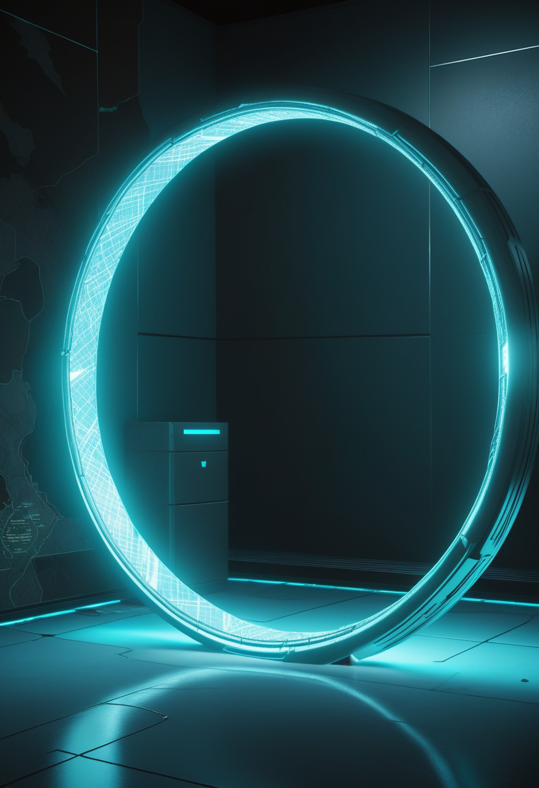
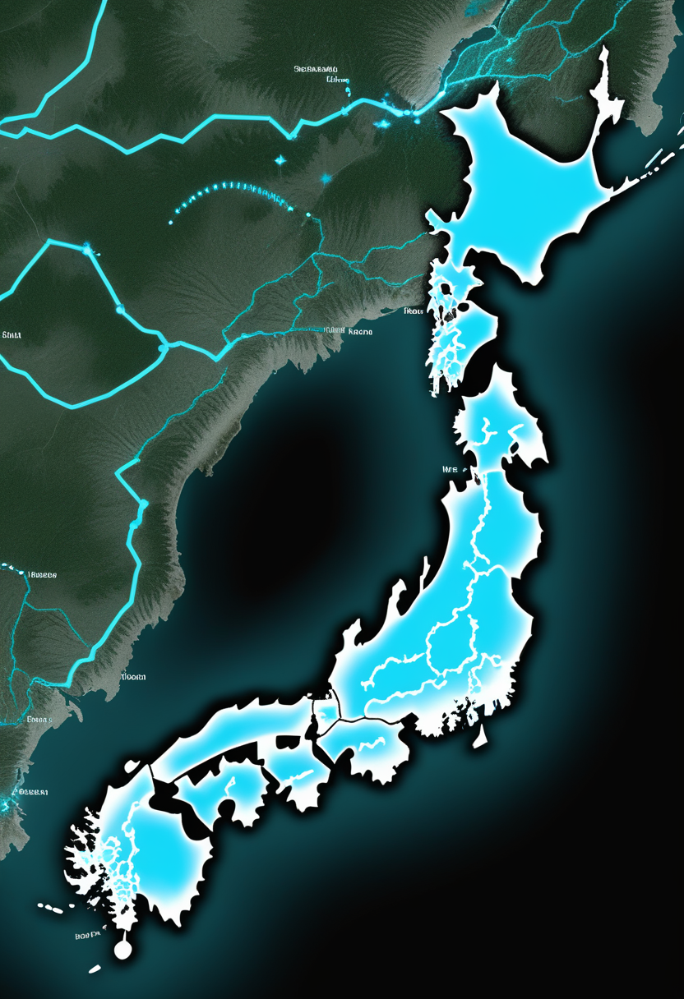
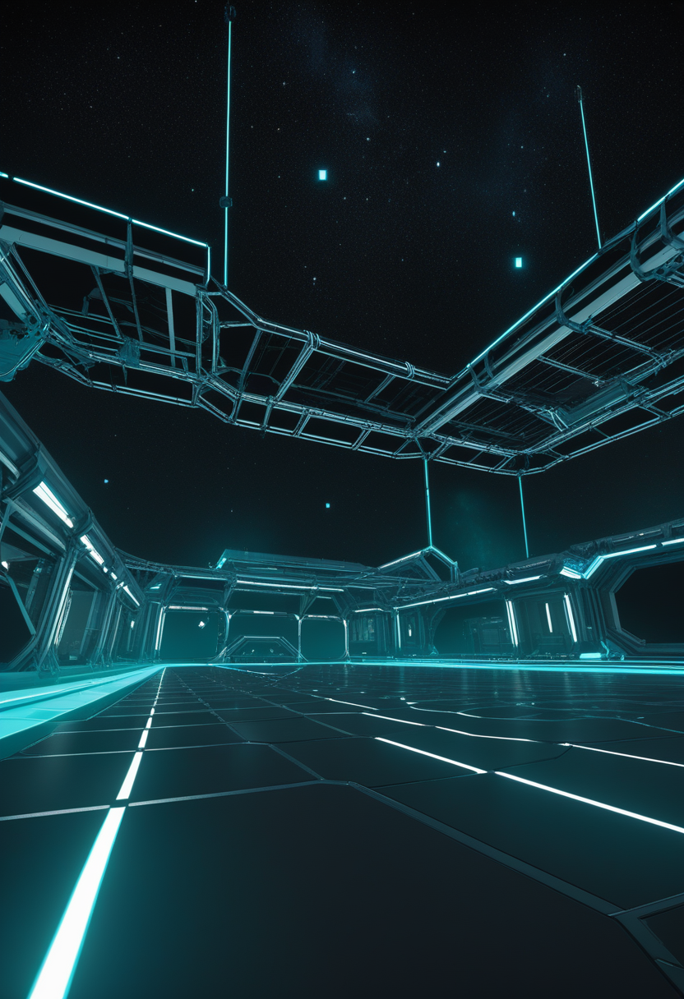
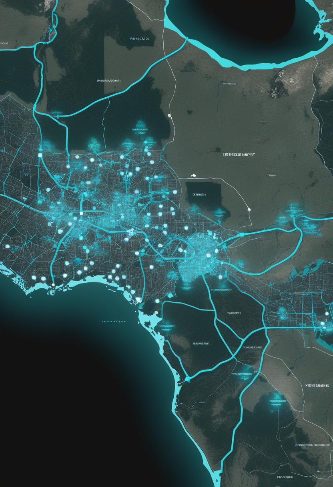
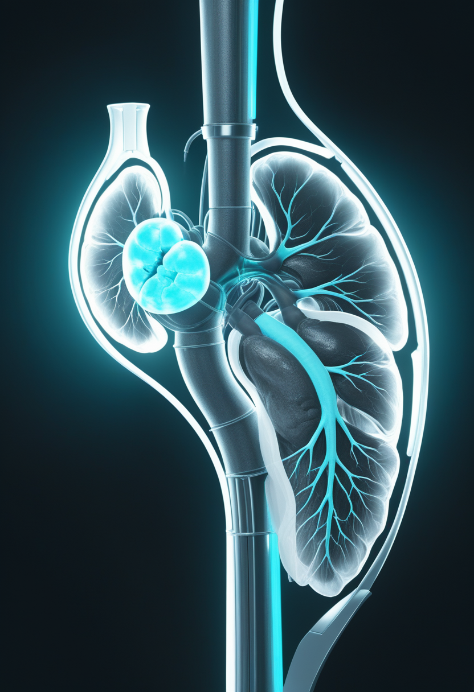

ブンディブギョ型エボラが歴代最速ペースで635例・127名の命を奪い、米国2.2億ドルの緊急資金が動き出した。その同じ週に、1万チャンネルを超える電極アレイが脳の地平を広げ、フィネレノンが腎臓医学に新しいページを刻み、ユークリッド衛星が6月24日に天の川の深部を開く。緊急と前進が交差する土曜日。世界は止まらず問いながら、回っている。

2026年6月9日時点でコンゴ民主共和国(DRC)の確定例が635例・死者127名に達し、歴代ブンディブギョ型流行で最速の増加ペースを記録中。ECDCの6月10日更新では1日37新規感染・12死亡のペースが継続し、イトゥリ州18保健区で600例、北キブ州32例・南キブ州3例にも拡大している。米国政府が約2.2億ドルの緊急拠出を表明し、WHOとAfrica CDCが6月5日に発動した5.2億ドル大陸対応計画と連動、国際的な包囲網が形成されつつある。ウガンダへの越境感染(確定19例・死者2名)も継続。承認ワクチンも特異的治療薬もないPHEIC下での封じ込め能力が試されている。
Scholar Rockは2025年9月にFDAから受領した完全回答書(CRL)への対処を経てBLAを再申請した。CRLの原因はCatalent/Novo Nordisk社の製造施設査察での指摘であり、薬剤自体の安全性・有効性への懸念ではない。FDAは優先審査を付与し、PDUFA日(審査期限)は2026年9月30日。SAPPHIRE第3相試験(SMA2型・3型患者180名超)では、ヌシネルセン・リスジプラム使用中の患者において運動機能改善を統計学的・臨床的に有意に示した。
MDA(Muscular Dystrophy Association)2026年学術集会でSAPPHIRE試験の追加解析が発表され、歩行可能なSMA患者での運動機能追加改善効果が示された。ヌシネルセン・リスジプラムとの併用でも安全性が維持されており、「SMN標的治療(核酸・遺伝子)＋筋肉標的(ミオスタチン阻害)」の2層アプローチへの支持が広がっている。アピテグロマブは既存のSMN療法を補完する第3の選択肢として位置づけられつつある。

大阪・兵庫・千葉・愛知・熊本でSMAの新生児マススクリーニング(NBS)が実施中。日本では2022年4月よりオナセムノゲン アベパルボベク(2歳未満・無症候性)とヌシネルセン(全年齢・無症候性)が保険適用済み。2024年の費用効果分析(Tandfonline)は全国NBS展開の費用対効果を支持しており、国民の95%超が拡大を支持している。全国統一プログラムへの制度整備が残る課題であり、2026年内の政策判断が期待される。
MDA 2026の追加解析がアピテグロマブに「歩行できる患者にも効く」という新たな証拠を加えた。9月30日のFDA判定まで3.5カ月。日本のNBS全国化は2026年内の政策判断が焦点だ。
イーロン・マスクが「2026年中にBCIデバイスの大量生産を開始し、ほぼ完全自動化された手術手順に移行する」と発表。新設計では電極スレッドが硬膜(dura mater)を貫通するため硬膜除去手術が不要となり、侵襲性とリスクが大幅に低下する見込み。試験参加者(Neuralnauts)は21名超に拡大(6月5日発表時点)。ロボットアーム制御やALS患者の40WPM入力も達成済みで、商用化の現実的見通しは2028〜2030年とされている。
Blackrock Neurotechが次世代BCI「Neuralace」を発表。従来のユタアレイ(30名超への研究植込み実績)を大幅に超える10,000チャンネル超の高密度電極アレイ。運動機能回復デバイス「MoveAgain」についてはFDA「画期的医療機器指定(Breakthrough Device Designation)」を取得済みで、商用承認プロセスが加速している。暗号資産大手Tetherが戦略的出資を発表するなど、資金面でも動きが活発化している。

Precision Neuroscienceは2025年4月17日にLayer 7 Cortical Interface(薄膜1,024電極、最大30日留置)のFDA 510(k)認可を取得し、2026年に入り研究・臨床応用が拡大中。Neuralinkの共同創業者ヴァネッサ・トロサ氏も同社に参画。Synchronは6月6日(本誌第3号既報)のApple統合・COMMAND試験に続き長期安全性データを蓄積中。Blackrockの1万チャンネル参入で、4社は「侵襲性 vs. 電極数 vs. 商用化速度」の異なるトレードオフで2026年後半の本格競争に臨む。
Neuralink(量産)・Blackrock(1万ch新登場)・Precision(FDA認可済)・Synchron(PMA秒読み)が同時進行 ― 2026年後半のBCI競争が本格化しつつある。

6月9日時点でコンゴ民主共和国(DRC)の確定例は635例・死者127名・入院中260名。ECDCの6月10日更新では1日37新規感染・12死亡のペースが継続。イトゥリ州が最大震源地(18保健区・600例)、北キブ州32例・南キブ州3例にも拡大中。ウガンダは確定19例・2死者で越境が継続。ブンディブギョ種の歴代流行で最速の増加ペースであり、承認ワクチンも特異的治療薬もないPHEIC下での封じ込めが急務となっている。
米国政府が2.2億ドルの緊急資金拠出を表明。6月5日にWHOとAfrica CDCが共同で発動した「大陸エボラ準備・対応計画(5.2億ドル要請)」との連動により国際的な包囲網が形成されつつある。ブンディブギョ種には承認ワクチンも特異的治療薬も存在しないため、有望候補薬の緊急試験が並行して進められている。周辺国の準備態勢強化が急務で、国際資金の執行速度が封じ込めの成否を左右する。
ECDCが公開した第24週報(2026年6月6〜12日)では、エボラに加えて麻疹・ニパウイルス感染症・チクングニア・ハンタウイルス・西ナイルウイルスを同時追跡中。CDCのRtモデル(6月9日)によるとCOVID-19が米国2州で増加・38州で減少・10州で横ばい。RSVシーズンは6月5日付で2025〜2026年シーズン終了と判定済み。欧州委員会はエボラ・ブンディブギョ型への対応ファクトシートを公開し、EU加盟国への感染リスクは「非常に低い」と評価している。
ブンディブギョ型の拡大は歴代最速水準、ワクチン不在のまま2.2億ドルが動く ― 封じ込めの主軸は隔離・接触追跡・支持療法であり、速度と資金が命取りだ。
ESAは2026年6月24日、Euclid Quick Data Release 2(Q2)を公開予定。銀河バルジ(天の川中心部の膨らみ)4.8平方度を光学VISカメラで約24時間連続撮像した、前例のない深度と解像度の画像が提供される。NASAローマン宇宙望遠鏡の2027年開始予定・銀河バルジ重力マイクロレンズ惑星サーベイの基準フレームとしても機能する予定。前回Q1(2025年3月)に続く第2弾で、暗黒物質・暗黒エネルギー・系外惑星研究への貢献が期待される。

2026年6月5日、FIND-CKD第3相試験結果(NEJM掲載)ほか関連論文がJAMA・Lancetに同日発表された。グラスゴー開催の欧州腎臓学会議(ERA 2026)でも同時発表。フィネレノン(選択的ミネラルコルチコイド受容体拮抗薬)を非糖尿病性慢性腎臓病患者に投与したところ、腎不全・CKD進行・心不全・心血管死の複合一次エンドポイントが約23%低下した。2型糖尿病合併CKDから適応が大幅拡大され、世界の慢性腎臓病患者数億人に裨益する可能性がある。
LHCが2つのチャームクォークを含む新粒子「Ξcc⁺(グザイcc+)」を2026年3月に発見した。前号(第8号・6月11日)で報告したLHCbの「チャーミングペンギン崩壊」4σ逸脱と組み合わせることで、CERNにおける標準模型の精密検証が多角的に進んでいることが分かる。Run 3データは2026年末まで継続収集中で、5σ確定に達するか新たな逸脱が見つかるかが注目点。2026年は「量子科学技術の国際年」(CERN参加)でもあり、量子技術の高エネルギー物理学応用も加速している。
フィネレノンの3誌同時発表は腎臓医学の転換点 ― ESAユークリッドQ2(6/24)とCERNの二重チャームバリオンが、宇宙と素粒子の地図を同時に塗り替えつつある。
Singularity Hub(2026年4月)によると、脳内各領域の相互作用・薬剤への反応・疾患進行をシミュレートする個別化デジタルツインの精度が着実に向上している。将来的には精神科薬の個別最適化や神経変性疾患の早期予測に応用が期待される。現状では全脳モデルはまだ「遠縁」程度の再現精度にとどまるが、部分的・機能的モデルの精度向上は顕著だ。MedicalXpress(2026年5月)も「仮想脳コピーは研究者が考えているより近い」と報じている。
2025年10月公表の「State of Brain Emulation Report」は、完全な全脳エミュレーションの実現を最低でも30〜40年先と結論づけた。2026年現在、シリコン上に完璧に再現された人間の神経細胞は存在せず、意識をアップロードした例もゼロ。アップロードされたマインドが意識を持つか・個人同一性が移転するかも未実証。一方で医療目的の部分的脳モデルは数十年内に実現可能とされており、「段階的な医療ツール化」が実態に近い見通しだ。
脳デジタルツインが精神健康リスク・認知特性・将来行動を予測できるようになれば、雇用主・保険会社・政府による悪用が現実的な脅威となる。プライバシー・インフォームドコンセント・データ所有権をめぐる国際的な規範形成が急務であり、欧州AI法との整合性や倫理委員会の関与方法が問われている。「デジタルツインは生物学だけでなく認知・行動・アイデンティティもモデル化する」という認識が研究者間で広がっており、技術が倫理を追い越す前に枠組みが必要だ。
脳ツインは「遠い未来のSF」から「5〜10年内の医療ツール」へ ― 全脳エミュレーションとは峻別し、倫理・法整備を技術が追い越す前に整えることが今の課題だ。
今日の世界は、635例の波と1万チャンネルの電極と3誌同時発表と、その全部を土曜の朝に並べていた。エボラが過去最速で命を奪い、国際資金が動き、ユークリッドが6月24日に天の川の深部を開く準備をしている。脳のデジタル双子がまだ「遠縁」で、全脳エミュレーションが30年先でも、今日も誰かが患者に寄り添い、電極を磨き、宇宙に問いを投げている。緊急と前進は、いつも同じ時間の中にある。
明日への短い便り。今日も世界は、問いながら回っていました。おやすみなさい。